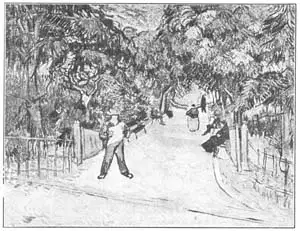
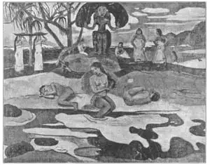

27
POST-IMPRESSIONISM
后印象主义

POST-IMPRESSIONISM hasn’t anything to do with fence posts. The post part of the title of this chapter means after. It is Latin word. So the title might be After-Impressionism which means the newer kinds of painting that came after the Impressionistic paintings You remember Monet’s work is Impressionism, where light is the most important person.
The father of Post-Impressionism was Paul Cézanne. He was a Frenchman, like Manet and Monet. At first he was an Impressionist himself, but he said he wanted to make Impressionism something solid and lasting like the art of the Old Masters. And after a while his work did become more solid, although none of his pictures became as well known as those of the Old Masters. Cézanne worked hard all his life at painting, but he never became popular as a painter until after his death. Luckily for him, he had money enough to live on without having to sell his paintings, for he found he couldn’t sell them —no one wanted to buy them.
Another Post-Impressionist who was younger than Cézanne had a very different kind of life. This other painter didn’t live quietly on a farm in southern France as Cézanne did, as you will soon see. His name was Vincent Van Gogh (pronounced Van Goch, the Goch rhyming with the Scotch word loch). He was a Dutchman. He tried working in an art store for his living, but if he thought his customers wanted to buy poor pictures, he gave them such lectures that he didn’t get along well at all. So he tried being a schoolmaster for a few months. I don’t believe he could have been a very good teacher, because he had a violent temper. Then he decided to be a clergyman, a minister. This didn’t work, either, because he soon got tired of the college for ministers where he was studying. And so he set out as a missionary to the workers in the Belgian mines. He felt so sorry for these poor miners that he gave away all his money and nearly starved, himself. At this time he began to draw pictures, sketches of the people he wanted so much to help.
His brother sent him money to live on and got him to go to Paris to study art. Then Van Gogh went to live in a little town in southern France, and there he painted many pictures.
These paintings are made up of squirming lines of paint instead of the dots of paint that the Impressionists used. A friend of his said, “He paints so fiercely that it is terrible to watch him.” His pictures look as if he had painted them with fierce intensity.

No.27-1 PUBLIC GARDEN, ARLES（《阿尔勒公共花园》） VAN GOGH（梵高 作）
Courtesy of The University Prints
And now comes a sadder part of Van Gogh’s life. His mind began to give way. He began to go crazy. One day a friend of his, who was a waitress in a café where Van Gogh sometimes went, asked him for a present and just in fun she said to him, “Well, if you can’t give me anything else, you might give me one of your big ears.”
Just before Christmas the waitress received a package. She thought it was a Christmas present. But when she opened it, out fell—an ear! The waitress was horrified. Poor Van Gogh was found in bed, completely out of his mind. He had cut off his right ear with a razor.
Of course he had to be taken to an asylum, where he finally got well enough to paint some more pictures. But the attacks of brain trouble kept coming back and during one of them Van Gogh shot himself.
A third Post–Impressionist was named Paul Gauguin (Go–ganh). Gauguin was a Frenchman of a different kind from Cezénne, and he led a life almost as strange as Van Gogh’s.
Gauguin began a different life early. He ran away from home when still a boy, got on a ship and went to sea. He made several voyages as a sailor to different parts of the world. Then he came back to Paris and went into business.
Perhaps Gauguin would never have become a painter if he had not run away to sea. For one day when he was walking down the street he came to a shop window that had some paintings in it. These paintings had the brightness and color that Gauguin had seen in the faraway Pacific isles. They brought back to him memories of his voyages so clearly that he asked who the painters were. Thus he became acquainted with the Post–Impressionists who had painted these pictures. Gauguin began then to paint too. He became a friend of Van Gogh and even lived with that artist for a while before Van Gogh lost his reason. Later, Gauguin moved to another part of France.
But he could not forget the beautiful tropic islands of the Pacific he had seen on his voyages. One day he packed up again and sailed for the island of Tahiti. There in Tahiti the painter found the life he liked best. He lived like one of the native islanders instead of like a civilized white man. And there he painted his best pictures.
These paintings are bright with the color of the tropics and show in their brightness the people of the islands in their play and rest and work. These South Sea pictures are the ones that made Gauguin a famous painter.

No.27-2 MAHONA NO ATUA（《众神的节日》） GAUGUI N（高更 作）
Courtesy of The University Prints
【中文阅读】
“后”（post）印象主义和栅栏“柱”（post）毫无瓜葛。本章标题中的“后”（post）是“在……后”的意思。Post是个拉丁词。“后印象主义”指的是印象主义画派之后出现的一种更为新型的绘画流派。还记得莫奈的画是印象主义的吧？印象主义画派最重要的角色是光线。
保罗·塞尚是后印象主义画派的创始人。他和马奈和莫奈一样，都是法国人。塞尚一开始也是画印象主义的，但他说要使印象主义的画更具立体感，而且能够像古代大师的作品那样永存不朽。过了一段时间，虽然他的画没能像古代大师那样闻名，不过的的确确变得更具立体感了。塞尚一生都勤奋画画，直到去世后才成为一名受大家欢迎的画家。他在世时发现他的画根本就卖不出去，因为没人愿意买他的画。不过幸运的是，就算他卖不出画，他生活的钱还是够的。
另外一位后印象主义画家要比塞尚年轻一些，而且他的生活经历也完全不同。这位画家不像塞尚那样在法国南部的一个农场里过着平静的日子。他的名字叫文森特·梵高，他是一位荷兰人。他曾为了谋生，在一个画店打工。但是，如果他意识到有顾客想买一些低劣的画，就会忍不住训斥人家，所以他根本就不能与人好好相处。后来他又试着做了几个月的老师。但是，我认为他不可能成为一名优秀的老师，因为他脾气非常暴躁。再后来，他又决定去当牧师。这当然也行不通，因为他没过多久就厌倦了就读的那所培训传道人的学校。然后他就去给比利时的矿工们传教。他非常同情那些可怜的矿工们，于是把所有的钱都捐给了他们，自己却差点饿死。他也就是从那时候开始为那些他非常想帮助的人们画画的。
他弟弟寄钱给他维持生计，并资助他到巴黎学习绘画。之后，梵高到法国南部的一个小镇生活，他在那里画了许多画。
这些画都是由许多弯弯曲曲的线条构成，而不是像印象主义画派那样使用一个个小色块。梵高的一个朋友说；“他画画时动作实在太剧烈了，搞得我们都不敢看他。”他的画看上去好像是用全身气力来画的。
接下来要讲讲梵高一生中那段不幸的时刻。他后来渐渐丧失了理智，开始变得疯癫。他时常去的那家咖啡馆有个女招待跟他相识，有一天，这个女招待问他要一件礼物，她只是开玩笑地说：“如果你没有办法给我其他东西的话，就把你的一只大耳朵给我吧。”
快到圣诞节的时候，这位女招待收到了一个包裹。她原以为是一个圣诞节礼品，但她一打开包裹，竟掉下一只耳朵！女招待吓坏了。人们发现可怜的梵高躺在床上，神志不清，因为他用剃刀把自己的右耳割掉了。
毫无疑问，梵高必须被送进疯人院。他在疯人院待了一段时间后，病情有所好转，又画了一批画。但他的精神病总是不断地复发。后来，他在一次病情发作时，开 枪自杀了。
第三位后印象主义画家名叫保罗·高更。他也是法国人，不过他与塞尚不同，他的经历几乎和梵高一样曲折离奇。
高更很早便开始过与众不同的生活。他还是个孩子的时候就离家出走了，乘坐一艘船去航海。作为一名水手，他到过世界许多不同的地方。后来，他回到了巴黎，开始经商。
如果高更没有离家出走去航海的话，他可能永远也不会成为一名画家。据说，有一天高更正沿着大街走，看到一家商店的橱窗里摆了几幅画。这些画的颜色都很明亮，跟他在遥远的太平洋岛屿上看到的颜色一样鲜艳。这些画深深唤起了高更航海的记忆，于是他立马打听到创作这些画的画家是谁。就这样，高更结识了创作这些画的后印象主义画家。接着，高更自己也开始画画。他跟梵高交了朋友，他甚至在梵高失去理智前还同这位画家一起生活过一段时间，后来就搬到法国另一个地区去了。
然而，高更一直对他航海时所看到的美丽太平洋热带岛屿无法忘怀。于是，有一天，他再次收拾行囊，航行到了塔希提岛。在那里画家找到了他自己最喜欢的那种生活。他像岛上的土著人一样生活，完全不像一个受过文明教育的白人。他在塔希提岛画出了他最好的画。
这批画的颜色都非常绚丽，极具热带风情，向我们展示了岛上人娱乐、休息和工作时的场景。这批南太平洋绘画使高更一举成名。